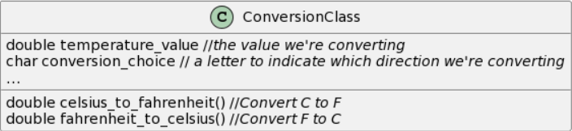

class Temperature
{
//Converting formula
public static double CalculateCelsiusToFahrenheit(double celsius)
{
return (celsius * 9 / 5) + 32;
}
public static double CalculateFahrenheitToCelsius(double fahrenheit)
{
return (fahrenheit - 32) * 5 / 9;
}
}
class Program
{
static void Main(string[] args)
{
//Main structure of the app
bool convert = true;
string? tryAgain;
Console.WriteLine("\n\n-------- Welcome to the Temperature Conversion app --------");
while (convert)
{
Console.WriteLine("\n Please choose an option what to convert ");
Console.WriteLine("\n----- Press No. 1 For Celsius to Fahrenheit -----");
Console.WriteLine("----- Press No. 2 For Fahrenheit to Celsius -----");
while(true)
{
int choice = Convert.ToInt32(Console.ReadLine());
double result;
Console.Write("Enter temperature\n");
double input = Convert.ToDouble(Console.ReadLine());
if (choice == 1)
{
result = Temperature.CalculateCelsiusToFahrenheit(input);
Console.WriteLine($"\n{input} Celsius is equal to {result} Fahrenheit.");
break;
}
else if (choice == 2)
{
result = Temperature.CalculateFahrenheitToCelsius(input);
Console.WriteLine($"\n{input} Fahrenheit is equal to {result} Celsius.");
break;
}
}
//Try again option
Console.WriteLine("Would you like to convert again (y/n)");
tryAgain = Console.ReadLine();
if (tryAgain == "y")
{
convert = true;
}
else if (tryAgain == "n")
{
convert = false;
}
}
Console.WriteLine("Thank you for converting");
Console.ReadKey();
}
}